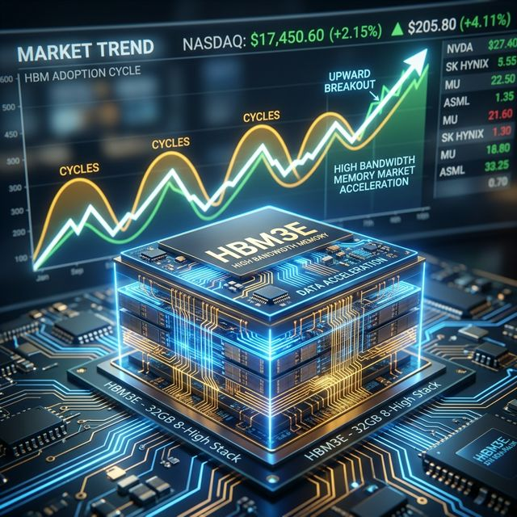

導入：マイクロン・テクノロジーと半導体業界の注目度
2026年現在、マイクロン・テクノロジー（Micron Technology、以下マイクロン）は、世界の半導体業界で最も注目される企業の一つです。AI革命の波がデータセンターやクラウド、モバイル、自動車など多様な分野に押し寄せる中、メモリ半導体の需要はかつてない規模で拡大しています。特に、NVIDIAの最新GPU「Vera Rubin」などAIインフラの中核を担う高帯域幅メモリ（HBM）や先端DRAM、NANDフラッシュの供給能力が、業界の成長を左右する戦略的資産となっています。
2026年3月に発表されたマイクロンの第2四半期決算は、売上・利益ともに過去最高を大幅に更新し、AI時代のメモリ需要がいかに爆発的であるかを如実に示しました。こうした好業績にもかかわらず、同社のPER（株価収益率）は依然として低水準にとどまっており、投資家の間では「今が買い時なのか」「サイクルのピークなのか」といった議論が活発化しています。
本記事では、直近決算の要点、PER低水準の理由、シリコンサイクルの構造とマイクロンの戦略、投資家視点でのチャンスとリスク、今後の注目ポイントまでを徹底的に解説します。
マイクロン2026年Q2決算の要点と評価
歴史的な好決算の全体像
2026年2月期（Q2）に発表されたマイクロンの決算は、同社史上でも「異次元」と呼ぶべき内容でした。売上高は238.6億ドル（前年同期比+196%）、GAAP純利益は137.9億ドル、希薄化後EPSは12.07ドル（Non-GAAPベースで12.20ドル）と、いずれも市場予想を大幅に上回る結果となりました。
| 指標 | 2026年Q2実績 | 前年同期比 | 市場予想比 |
|---|---|---|---|
| 売上高 | 238.6億ドル | +196% | +24% |
| GAAP純利益 | 137.9億ドル | +771% | - |
| Non-GAAP EPS | 12.20ドル | +682% | +38.8% |
| 売上総利益率 | 74.9% | +37pt | +18pt |
| フリーキャッシュフロー | 69億ドル | +77% | - |
セグメント別の業績動向
マイクロンは全セグメントで過去最高売上を同時に更新しました。特にデータセンター向けの成長が際立っています。
| 事業部門 | 売上高（Q2） | 売上構成比 | 前四半期比成長率 |
|---|---|---|---|
| クラウドメモリ | 77.5億ドル | 32% | +47% |
| コアデータセンター | 56.9億ドル | 24% | +139% |
| モバイル＆クライアント | 77.1億ドル | 32% | +81% |
| 車載＆組み込み | 27.1億ドル | 11% | +62% |
特にコアデータセンター部門は、AIサーバー向けHBM需要の急拡大を背景に、前四半期比で2.4倍という爆発的な成長を記録しました。
PERが低水準で推移する理由と業界比較
2026年3月時点でのマイクロンのPERは、フォワードPERが約5倍、PEGは0.18倍と、利益成長を織り込むと依然として格安水準にあります。
- サイクルの警戒： メモリ業界特有の「好況の後は暴落する」という投資家心理。
- 設備投資の重圧： 2026年度に250億ドル超の設備投資（CapEx）を計画し、将来の減価償却費増を懸念。
- 需要の持続性： AI需要が一時的なブーム（バブル）である可能性を排除できない。
業界他社とのPER比較
| 企業名 | 実績PER | フォワードPER | PEG |
|---|---|---|---|
| マイクロン | 44倍 | 10.5倍 | 0.18 |
| Samsung | 30倍 | 12倍 | 0.25 |
| SK hynix | 38倍 | 13倍 | 0.22 |
| NVIDIA | 42倍 | 35倍 | 0.8 |
シリコンサイクルの構造とマイクロンの戦略
今回のAIブームは、従来のサイクルと比べて以下の点で「構造的な変化」をもたらしている可能性があります。
- HBMという新カテゴリー： AIチップに不可欠であり、通常のDRAMの3倍のウェハー面積を消費するため、物理的な供給制約が強い。
- 長期契約の浸透： 2026年の全HBM供給を事前合意で売り切っており、価格変動リスクが大幅に低下。
- 製品ミックスの高度化： HBMは通常DRAMの3〜5倍の単価で販売され、利益率を構造的に底上げしている。
マイクロンの戦略：供給制約下の攻めの投資
マイクロンは2026年度に250億ドル超の設備投資を計画。台湾Powerchipの買収や米国・日本・インドでの新工場建設を進め、シェア防衛と技術リーダーシップの確立を狙います。
📊 リアルタイム財務データ（MU）
今後の注目ポイントと投資判断のヒント
- HBM市場の拡大： 2028年には1,000億ドル規模へ（現在の3倍）。
- 新工場の稼働タイミング： 2027〜2028年以降、供給過剰リスクが再燃するか。
- 地政学リスク： 台湾集中リスクの緩和と各国補助金の活用。
- 税制環境： OECD Pillar Two等のグローバル最低税率導入の影響。
まとめ：マイクロン投資の最終判断
短期的には「買い」優勢ですが、メモリ業界は需給バランスの変化が業績に直結するため、毎四半期の決算で在庫と価格推移を監視することが不可欠です。AIインフラの構造的成長を前提にすれば、フォワードPER10倍以下、PEG 0.18倍という現在の指標は、長期投資家にとって非常に魅力的なエントリーポイントと言えるでしょう。